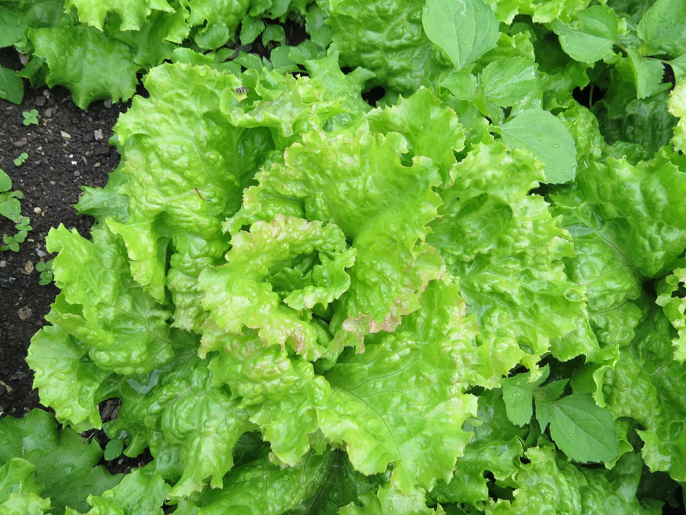

What's eating my plants? Reading the damage before you act
Match the holes, the trails and the cut stems to the culprit first, then use the fix that works. Most of it isn't spray, and some damage costs nothing.

Photo: GT1976 · CC BY-SA 4.0, via Wikimedia Commons.
What you need
Five minutes in the garden at two different hours, morning for fresh damage and dusk for the culprits
A flashlight, for the night shift
Cardboard or foil for collars, and a board or two for traps, depending on what you find
Before you fight anything, read the damage. The shape of the holes, the hour they appear, and what’s left behind will usually name the culprit for you. That matters because the fixes that work are specific. The collar that stops a cutworm does nothing to a slug. And spraying at an unidentified enemy mostly harms the allies you didn’t know you had.
How do I tell what's doing the damage?
You’ll rarely catch the eater in the act, but each one signs its work. The common signatures, from the extension diagnostics this guide leans on:
Irregular holes with a silvery, dried-slime sheen nearby, worse after damp weather, on lettuce, basil, beans, hostas or strawberries, mean slugs. They feed at night; you’ll almost never see one at noon.
A young transplant cut clean off at the soil line overnight, the top often left lying beside the stump, is a cutworm. It looks like vandalism because, from the plant’s side, it is.
Lots of tiny round pits and holes, as if the leaf caught birdshot, especially on radish, arugula and the cabbage family, mean flea beetles.
Bigger ragged holes in cabbage-family leaves, with green droppings tucked along the midrib, mean caterpillars, most often the imported cabbageworm. Look underneath the leaf; that’s where they ride out the day.
A squash vine that wilts suddenly while the rest of the plant looks fine: suspect squash vine borer tunnelling inside the stem, or squash bugs working it over. Check the stem base for holes and sawdust-like frass.
Whole stems nipped off cleanly, tops of plants gone, is a mammal. Deer take rough bites high up; rabbits cut low at a clean 45 degrees.
Ten minutes of looking beats any product you can buy: morning for fresh damage, dusk with a flashlight for the culprits themselves. Everything below depends on knowing which one you have.
Something slimes the lettuce at night - what works on slugs?
Slugs thrive where it’s cool, damp and shaded, and they’re busiest at night. Populations surge in wet spells and almost disappear in dry ones. The playbook, in the order it pays:
Dry the night shift out. Water in the morning so leaves and the soil surface are dry by dusk. Drip irrigation beats overhead watering for the same reason. Clear boards, debris and dense mats of mulch where they shelter by day.
Trap and collect. A flat board or damp newspaper laid by the bed becomes a daytime shelter you can flip and clear each morning. Hand-picking by flashlight into soapy water is unglamorous and it works.
Bait if it’s beyond that. Iron phosphate baits work. Slugs stop feeding within days of eating it, and it’s the least worrying option to have around a food garden. Copper barriers can deter crossings, though much of the tape sold for the job is too narrow to matter.
Skip the folklore rings. The corpus has checked the popular ones:
Coffee grounds scattered around plants repel slugs, snails, and other pests.
Coffee grounds scattered around plants haven't been shown to repel slugs or other pests. The idea comes from caffeine, which does kill slugs in a strong enough soil drench, but used grounds hold very little of it. Use beer traps, hand-pick at night, or put down iron-phosphate bait; put the grounds in the compost.
What is known
This comes from caffeine. Oregon State reports that a 1% to 2% solution drenched into soil drove slugs out and killed them by caffeine poisoning, and it promotes liquid coffee as a slug killer. But that is a drench. Used grounds keep only small amounts of caffeine, and there is no published evidence that coffee grounds repel or kill any garden pest. Grounds are finely textured and compact easily, so on the surface they can dry out and shed water unless covered with leaves or bark. They are a fine compost ingredient and soil amendment. (The separate claim that grounds acidify soil is checked on its own page, and so is the claim that crushed eggshells deter slugs.)
There is no published evidence that coffee grounds will repel or kill any garden pests. Nor is there any science-based information on their ability to attract either pests or beneficial animals like earthworms.
It is the trap that will kill them, not just the bait.
Insecticide sprays are the wrong tool entirely. A slug isn’t an insect, and in most cases won’t respond to them.
A healthy seedling was cut off at the ground overnight - what happened?
The corpus carries this one as a graded rule, because the defense is cheap and the mechanism is plain:
A young transplant can be cut off at the soil line overnight by a cutworm, a caterpillar that curls around the tender stem and severs it just above the ground. A collar around the stem blocks it.
If you skip this, it still grows, just less well. The planner suggests it.
How it works: Cutworms are the soil-dwelling caterpillars of several night-flying moths. They feed after dark, curling the body around a seedling's stem and chewing through it at or just above the soil surface, which topples the whole plant. A young transplant is vulnerable because its stem is small and tender; as the plant grows the stem thickens past what a cutworm can encircle and cut, so the risk is an early-season one. A collar of cardboard, stiff paper, or foil, set around the stem and pushed into the soil, is a physical barrier the cutworm can neither climb over nor tunnel under to reach the stem.
Evidence: checked against 2 sources in the research-based literature.
Collars of cardboard, aluminum foil, or metal can be placed around transplants at planting to prevent feeding
Remedy
Around each new transplant, set a collar of cardboard, folded paper, or foil a few centimeters tall, with one edge pushed a few centimeters into the soil and the rest standing above it, so the cutworm cannot get over the top or under the bottom to reach the stem. Once the stem thickens the collar can come off.
The collar is the whole trick. Put a ring of cardboard or foil around each new transplant, pushed a few centimetersan inch or so into the soil and standing a few above it, and the caterpillar can’t reach the stem. Cutworms hide in soil and debris by day. If one got a seedling overnight, scratch through the top few centimetersinch or two within a foot of the stump the next evening and you’ll often find the culprit curled like a gray comma. They’re a spring problem almost entirely. Once plants have thickened past pencil-width, the danger has passed.
How do I keep pests off in the first place?
The strongest pest control in the corpus is exclusion and rotation. Both are graded and both are mechanical:
Row cover keeps pests off young crops; lift it at bloom for insect-pollinated ones
If you skip this, it still grows, just less well. The planner suggests it.
How it works: Floating row cover is a gauze-like spun sheet laid loosely over the crop and sealed at its edges to the soil, and it stops damage by physical exclusion (the adult insect cannot reach the plant to feed or lay eggs), so the barrier must be continuous from planting, before the pests arrive, with its edges buried against a walking insect; because the same closed barrier also shuts out the bee, a crop whose fruit depends on insect pollination has to be uncovered once its flowers open.
Evidence: checked against 2 sources in the research-based literature.
For insect pollinated vegetables, like the nightshades ... and cucurbits ..., row cover should be removed when female flowers bloom so as to allow pollination to occur.
Some pests overwinter in the soil near host plants, emerging the following spring under a cover. (Examples include the adult flies of root maggots, flea beetles, and Colorado potato beetles.)
Remedy
Cover the bed at planting with the crop still small, drape the fabric loosely with slack to grow into, and bury or weight every edge so the perimeter is sealed. Leave it on through the early weeks when the pest is active. For a crop that needs insect pollination to fruit (squash, cucumber, melon, pumpkin), remove the cover once female flowers begin to bloom so pollinators can reach them; leafy greens, roots, brassicas grown for heads, and self- or wind-pollinated crops can stay covered to harvest. Where the target pest overwinters in the soil under the bed (root maggots, flea beetles, Colorado potato beetle), cover a bed that did NOT grow the same crop, or the pest emerges trapped inside.
If you skip this, it still grows, just less well. The planner suggests it.
How it works: Resource concentration. A specialist locates and holds its host more efficiently at higher host density and continuity, so an unbroken run of one family across adjacent beds is an easier target than the same family separated by a non-host (associational resistance).
Evidence: checked against 2 sources in the research-based literature.
The 2 sources
Organization of a plant-arthropod association in simple and diverse habitats: the fauna of collards (Brassica oleracea) Root 1973
… the resource concentration hypothesis, which states that herbivores are more likely to find and remain on hosts that are growing in dense or nearly pure stands; that the most specialized species frequently attain higher relative densities in simple environments.
Flea beetle movement in a broccoli monoculture and diculture Elmstrom, Andow & Barclay 1988
… strong, direct support for the hypothesis that host plants are harder to find and easier to lose in vegetationally diverse habitats than in monocultures.
Remedy
Where one family fills adjacent beds in a single season, breaking the run with a non-host family between them lengthens the distance the specialist must travel to the next host. The app discloses this and never docks a score. A continuous single-family block can be the right call anyway (a wind-pollinated crop like corn sets better massed), so the app names the trade-off and leaves the choice to the gardener.
The row cover stops the flying half of the problem before it lands. The one catch is that anything needing pollination must be uncovered when it flowers (the row covers guide walks the timing). Rotation starves the specialists: a pest that overwinters where its host family grew wakes up next to breakfast if the same family is back. If you grow carrots, one interplanting claim does carry a graded mechanism, the scent-masking that earned its place:
Alliums interplanted with carrots reduce carrot rust fly damage.
If you skip this, it still grows, just less well. The planner suggests it.
How it works: The carrot rust fly finds its host by the smell of carrot foliage. Onion and other allium volatiles growing among the carrots mask that scent, so fewer flies locate the row to lay eggs. Because the protection is the smell, it lasts only while the alliums are in the ground. Once they are pulled, the masking goes with them.
Evidence: checked against 1 source in the research-based literature.
Do marigolds, dish soap, or radish borders really work?
Pest control attracts more folklore than any other corner of the garden, and most of it fails the same way. A real but narrow effect gets inflated into a general shield.
Marigolds repel most garden pests and protect the whole garden.
Marigolds don't protect the whole garden. Their best-known trick is underground. A dense planting of the right kind, grown at least two months before your crop, suppresses root-knot nematodes. Dotted among the vegetables, it doesn't work. Against insects the results are mixed. Some pests, like thrips and whiteflies, drop in trials; others, like Colorado potato beetles, don't budge. Grow them for color and treat any pest help as a bonus.
What is known
Marigolds are not a garden-wide shield. Their best-established effect is on root-knot and some other nematodes in the soil. A dense stand of the right Tagetes, planted at least two months before the crop, suppresses them. Whether that is through the root compound alpha-terthienyl or because marigold is not a host is not settled. Dotting marigolds among the vegetables does not appear to work, and a susceptible variety can make nematodes worse. Against insects the evidence is mixed. Studies have found fewer thrips, cabbage worms (in mixed plantings) and squash bugs, and a glasshouse study found marigold scent slowed whiteflies, but marigolds do not deter Colorado potato beetles and there is little research behind the flea-beetle claim.
Radishes don't repel flea beetles. Flea beetles love radish, which is why some gardeners plant it as a trap crop to lure them off their broccoli and cabbage. That only works if you then deal with the beetles on the radish. If your radish leaves are riddled with tiny holes, that's flea beetles doing exactly what they do.
What is known
Radish does not repel flea beetles; it draws them. Radish is among the brassicas flea beetles find most attractive, and they damage it at every stage, which is why radish and daikon are planted as a deliberate trap crop, to pull flea beetles away from seedlings of other brassicas such as broccoli and cabbage. That is the opposite of a deterrent, and a trap crop only helps if you then deal with the beetles on it. Extension advice is to destroy, spray or harvest the trap crop once the main crop has outgrown the danger. Where wild mustards are common, the trap may make little difference.
Trap cropping involves purposefully planting a highly favored crop to attract flea beetles away from the main crop.
uvm.edu
Flea BeetlesUniversity of Vermont Extension, Vegetable and Berry Program
Other highly attractive brassicas include radish, daikon and arugula. These crops remain vulnerable to flea beetle damage at all stages of their growth.
Dish soap isn't the same as insecticidal soap. Detergents strip the leaf's protective wax and can damage foliage, so the "safe homemade spray" idea backfires. If you want a soap spray, use a real insecticidal soap; it works on contact against soft-bodied pests like aphids.
What is known
Dish detergents are not insecticidal soaps. Insecticidal soaps are potassium salts of fatty acids made for use on plants; detergents are degreasers that can damage plants by dissolving the waxy cuticle that protects the leaf, so the "safe homemade version" framing is exactly backwards. If you want a soap spray, use a labeled insecticidal soap, which works on contact against soft-bodied pests such as aphids.
The source
homegarden.cahnr.uconn.edu
Insecticidal SoapsUniversity of Connecticut Home & Garden Education Center
Dishwashing soaps and detergents are designed to remove grease from dishes and may cause plant damage by dissolving the waxy cuticle on plant leaf surfaces
Sprinkling human hair, soap shavings, or urine around the garden reliably keeps deer and rabbits out.
Hair, soap and other home-remedy scents aren't a reliable way to keep deer or rabbits out. They need renewing, the animals get used to them, and deer have even eaten the soap. A fence is the dependable fix, and for deer it has to be tall. Store-bought repellents do better than home remedies, but most can't go on food crops.
What is known
Hair, soap and similar home remedies are unreliable. Extension services call them questionable at best, deer have been seen eating the soap, and what works in one garden can fail where deer are more numerous. Hair and soap bags have to be renewed monthly, and deer and rabbits get used to repellent smells. A fence is what dependably keeps them out. For deer, the conventional deer- proof fence is 8 feet of woven wire, and for rabbits fencing is the most effective protection. Commercial repellents are more reliable than home remedies, but most cannot be used on edible crops and their effect is temporary.
While many people swear that nylon stockings filled with human hair and bars of soap repel deer, these home remedies are typically not as reliable as products labeled as deer repellents.
Fencing is the most effective way to prevent rabbit damage in home gardens
When is it fine to do nothing?
A vegetable garden isn’t a showroom, and plants outgrow more damage than most of us expect. The extension threshold for flea beetles on brassicas, for instance, is 10 to 20 percent leaf area lost before treatment earns its cost. A leaf that looks peppered can still be feeding the plant fine. Cosmetic slug damage on outer lettuce leaves costs you the outer leaves. And every broad-spectrum response you skip spares the ground beetles, birds, toads and firefly larvae that were already eating your slugs for free.
So read the damage, name the culprit, use the specific fix, and let the small stuff go. If the damage is bad and this page’s signatures don’t match it, your state extension service, or outside the US a local plant clinic, runs real diagnostic help. It’s the same well this guide draws from.
Further reading
Good places to read more about the technique on this page. The grade on each card comes from that card’s own sources.